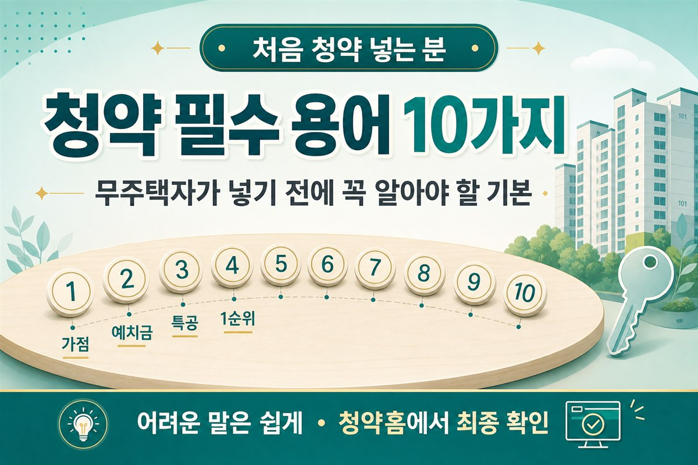

청약 전에 꼭 알아야 할 필수 용어 10가지 — 무주택자를 위한 완전 정리 (2026)
처음 청약 넣는 사람을 위한, 개념만 쉽게 풀어 쓴 용어 가이드입니다

1. 도입 — 청약 용어, 왜 이렇게 어렵지?
청약 넣으려는데 공고문을 펼치면, 용어가 외계어처럼 느껴질 때가 있습니다. 무주택 기간, 예치금, 특별공급, 재당첨 제한… “내가 대상인지부터 모르겠다”는 말이 나올 만합니다.
이 글은 그런 분을 위한 정리입니다. 용어집이 한 줄 정의라면, 이 글은 실전에서 어디서 만나는지까지 풀어 씁니다. 각 용어마다 정의 → 왜 중요한가 → 실제로 어디서 보이는가 순서로 읽으면 됩니다. 구체 금액·점수·소득 기준은 제도가 바뀔 수 있으니, 최종 확인은 항상 청약홈 공고 기준으로 하세요.
최근에는 정책·세제 이야기도 많이 나오지만, 결국 무주택 실수요자가 당장 손에 잡을 수 있는 기회는 청약인 경우가 많습니다. 흐름이 궁금하다면 30대 무주택 월급쟁이 관점 글이나 7월 세제개편 미리보기도 함께 보면 맥락이 잡힙니다.
먼저 읽어주세요
아래 내용은 이해를 돕기 위한 개념 설명입니다. 예치금·가점·특별공급 자격 등 구체 숫자는 지역·공고·시점에 따라 달라질 수 있습니다. 실제 청약 전에는 해당 단지 공고와 청약홈 안내를 반드시 확인하세요.
2. 청약 용어를 어디서 만나게 되나
청약 준비를 시작하면, 용어는 보통 아래 순서로 등장합니다. 미리 흐름을 알아 두면 공고문을 읽을 때 덜 막힙니다.
-
통장 개설 단계
은행 앱·창구에서 “주택청약종합저축” 가입 시 청약통장, 예치금 개념이 나옵니다. 가입 기간이 쌓이면 나중에 청약 가점에 반영됩니다. -
공고 확인 단계
청약홈·분양 알리미에서 단지 공고를 열면 국민주택/민영주택, 특별공급, 1순위/2순위, 전용면적 등이 한꺼번에 등장합니다. -
청약 접수 단계
청약홈에서 유형·주택형을 고를 때 무주택 기간, 예치금 충족 여부, 가점이 자격 판정에 쓰입니다. -
당첨 이후
계약·입주 과정에서 분양가상한제, 재당첨 제한 같은 용어가 “다음 청약에도 넣을 수 있나”와 연결됩니다.
3. 용어 10가지 한눈에 정리
아래 표는 이 글에서 다루는 10개 용어를 요약한 것입니다. 한 줄 정의만 필요하면 용어집을 참고하세요. 이 글은 각 용어를 실전 맥락에서 풀어 씁니다.
| 용어 | 한 줄 요약 | 주로 보는 곳 |
|---|---|---|
| 무주택 기간 | 집 없이 지낸 기간 | 가점 산정, 특별공급 자격 |
| 청약 가점 | 민영 가점제 점수 | 청약홈 접수, 가점 계산기 |
| 청약통장 | 청약 참여용 저축 | 은행 가입, 예치금·가점 |
| 예치금 | 신청 자격용 최소 잔액 | 청약홈 기준표, 공고문 |
| 1순위/2순위 | 접수 자격 단계 | 공고문 자격 요건 |
| 특별공급 | 특정 자격자 우선 배정 | 공고문 공급 유형 |
| 국민/민영주택 | 공급 주체·규칙 구분 | 공고 첫머리, 청약 방식 |
| 전용/공급면적 | 실사용 vs 공용 포함 면적 | 주택형 표, 평면도 |
| 분양가상한제 | 분양가 상한 규제 | 분양 공고, 가격 안내 |
| 재당첨 제한 | 당첨 후 일정 기간 제한 | 공고문 제한 조항 |
4. 청약 가점 — 3가지 항목이 어떻게 구성되나
민영주택 가점제에서 점수는 보통 세 덩어리로 나뉩니다. 아래는 일반공급 가점제 기준으로, 사이트 청약 가점 계산기가 반영하는 구조입니다. 특별공급·지역별 세부는 공고마다 다를 수 있습니다.
| 항목 | 만점 | 실전에서 확인하는 곳 |
|---|---|---|
| 무주택 기간 | 32점 | 청약홈 자격 조회, 가점 계산기 |
| 부양가족 수 | 35점 | 가족관계증명·세대 구성, 계산기 |
| 청약통장 가입기간 | 17점 | 통장 가입일, 은행·청약홈 조회 |
| 합계 | 84점 | 민영 일반공급 가점제 기준 |
※ 가점 산정 세부는 공고·시기별로 달라질 수 있습니다. 청약홈·해당 단지 공고를 확인하세요.
5. 공급 유형별 — 용어가 다르게 쓰이는 이유
같은 “청약”이라도 국민주택·민영주택·특별공급마다 규칙이 다릅니다. 공고 첫머리에 “무슨 주택인지”를 확인하는 습관이 필요합니다.
| 유형 | 핵심 용어 | 초보가 먼저 볼 것 |
|---|---|---|
| 국민주택 | 납입 횟수·인정 금액, 1순위 | 청약통장 납입 이력, 순위 요건 |
| 민영주택 | 예치금, 청약 가점 | 예치금 기준표, 가점 계산기 |
| 특별공급 | 신혼·생애최초·다자녀 등 | 해당 유형 자격 요건, 소득 기준 |
| 일반공급 | 가점 또는 추첨 | 공고문의 당첨 방식 확인 |
6. 청약 필수 용어 10가지 — 실전 맥락으로 풀기
무주택 기간
집을 소유하지 않은 상태로 얼마나 지냈는지를 세는 기간입니다.
쉬운 예로, 지금까지 본인 명의 주택이 없었다면 “무주택으로 산 시간”이 쌓입니다. 혼인·세대 구성에 따라 계산 방식이 달라질 수 있어, 공고의 산정 기준을 봐야 합니다.
왜 중요할까? 가점제에서 점수를 크게 좌우하는 요소 중 하나입니다. 무주택 기간이 길수록 가점이 올라가는 구조입니다.
어디서 만나나? 청약홈 접수 화면의 자격 조회, 청약 가점 계산기의 “무주택 기간” 항목, 특별공급 공고문의 무주택 요건에서 확인합니다.
청약 가점
민영주택 등에서 당첨 가능성을 점수로 비교할 때 쓰는 점수표입니다.
흔히 말하는 가점은 대략 세 덩어리로 이해하면 쉽습니다. 무주택 기간, 부양가족 수, 청약통장 가입 기간. “대충 몇 점일 것 같다”보다, 실제 숫자를 한 번 찍어보는 게 중요합니다.
왜 중요할까? 같은 단지에 여러 명이 몰리면, 가점이 높을수록 유리한 경우가 많습니다.
어디서 만나나? 청약홈 민영주택 접수 시 가점 표시, 가점 계산기, 단지 공고문의 “가점제 안내” 항목에서 확인합니다. 내 점수가 궁금하다면 청약 가점 계산기로 먼저 점검해 보세요.
청약통장 (주택청약종합저축)
청약에 참여하기 위해 가입·유지하는 통장입니다.
은행에서 “청약통장”이라고 부르는 상품이 바로 이 계열입니다. 가입만 했다고 끝이 아니라, 가입 기간·납입 횟수 등이 순위·가점에 영향을 줄 수 있습니다.
왜 중요할까? 통장이 없으면 아예 시작할 수 없는 경우가 많습니다. 가장 먼저 챙길 기본 장비입니다.
어디서 만나나? 은행 창구·앱 가입 화면, 청약홈 자격 조회, 청약통장 월 납입금액 가이드에서 납입 전략까지 이어집니다.
예치금
청약 신청 자격을 갖추기 위해 통장에 넣어둬야 하는 최소 금액 개념입니다.
“얼마를 넣어야 하냐”는 질문이 가장 많은데, 금액은 지역·평형(주택 규모)별 기준이 따로 있습니다. 여기서는 숫자를 단정하지 않겠습니다. 공고·청약홈의 예치금 기준표를 보는 게 정답입니다.
왜 중요할까? 예치금이 부족하면 원하는 평형에 신청조차 못 할 수 있기 때문입니다.
어디서 만나나? 청약홈 “예치금 기준” 메뉴, 단지 공고문의 주택형별 예치금 표, 은행 앱의 청약통장 잔액 화면에서 확인합니다.
1순위 / 2순위 조건
청약 접수의 “줄 서는 순서”를 나누는 자격 단계입니다.
쉽게 말해 1순위가 먼저 기회를 보고, 조건이 안 되면 2순위로 넘어가는 구조로 이해하면 됩니다. 가입 기간·납입 횟수 등 세부 요건은 주택 유형·지역·공고마다 다를 수 있습니다.
왜 중요할까? 순위가 안 되면 원하는 단지에 아예 못 넣거나, 경쟁 구도가 달라질 수 있습니다.
어디서 만나나? 단지 공고문 “청약 자격” 항목, 청약홈 접수 전 자격 조회 결과에서 “1순위 해당/미해당”으로 표시됩니다.
특별공급
일반공급과 따로, 특정 자격자에게 우선 배정하는 물량입니다.
대표적으로 신혼부부·생애최초·다자녀 같은 유형이 자주 언급됩니다. “점수가 낮아서 일반공급이 불리하다”면 특별공급 자격이 있는지부터 보는 분들이 많습니다. 소득·혼인·무주택 요건은 유형마다 다르고, 바뀌기도 하니 공고 확인이 필수입니다.
왜 중요할까? 해당되면 일반공급보다 경쟁 구도가 달라질 수 있는 별도 통로이기 때문입니다.
어디서 만나나? 단지 공고문 “공급 유형” 표, 청약홈 접수 시 특별공급 탭, 청약홈 “특별공급 자격 안내”에서 확인합니다.
국민주택 vs 민영주택
누가 지어서 어떻게 공급하느냐에 따라 나뉘는 주택 구분입니다.
아주 거칠게 말하면, 공공성이 강한 쪽(국민주택 계열)과 민간이 공급하는 쪽(민영주택)으로 나눠 볼 수 있습니다. 청약 방식·순위·가점 적용이 달라질 수 있어, 공고 첫머리에 “무슨 주택인지”를 확인하는 버릇이 필요합니다.
왜 중요할까? 같은 “청약”이라도 규칙이 다를 수 있기 때문입니다. 국민은 납입 횟수, 민영은 가점·예치금이 핵심입니다.
어디서 만나나? 공고문 제목·개요, 청약홈 단지 상세의 “주택 구분” 항목, 청약통장 납입 가이드에서 유형별 전략 차이를 볼 수 있습니다.
전용면적 / 공급면적
전용면적은 내 집 안에서 쓰는 면적, 공급면적은 공용 부분을 포함한 면적에 가깝습니다.
광고에 “84㎡”라고 나오면 보통 전용면적 이야기를 많이 합니다. 복도·계단 같은 공용 공간이 포함되면 체감 평수와 숫자가 다르게 느껴질 수 있습니다.
왜 중요할까? 예치금·청약 가능한 주택형·실거주 체감이 면적 기준과 연결되기 때문입니다.
어디서 만나나? 단지 공고문 주택형 표, 청약홈 “주택형별 정보”, 모델하우스·평면도에서 확인합니다.
분양가상한제
분양가를 일정 기준 안에서 제한하는 제도를 말합니다.
“시세보다 싸게 나올 수 있다”는 기대와 함께 자주 등장하는 단어입니다. 다만 적용 지역·단지·시점에 따라 체감이 달라지고, 로열층·옵션 등으로 실제 부담은 더 커질 수 있습니다.
왜 중요할까? 가격 매력과 경쟁률이 함께 움직이는 경우가 많아, 전략을 세울 때 꼭 보는 항목입니다.
어디서 만나나? 분양 공고의 “분양가” 안내, 청약홈 단지 정보, 뉴스·정책 보도에서 “분양가상한제 적용” 문구로 등장합니다.
재당첨 제한
한 번 당첨된 뒤, 일정 기간 다른 청약 당첨을 제한하는 규칙입니다.
“당첨되면 끝”이 아니라, 그 이후 일정 기간은 다시 넣기 어려울 수 있다는 뜻으로 이해하면 됩니다. 제한 기간·적용 범위는 주택 유형과 규정에 따라 다르니, 당첨 전에는 공고의 제한 조항을 꼭 읽으세요.
왜 중요할까? 아무 단지에나 넣어보고 당첨되면, 정작 원하는 단지 기회를 놓칠 수 있기 때문입니다.
어디서 만나나? 단지 공고문 “당첨자 제한” 항목, 청약홈 당첨 후 안내, 계약 전 유의사항에서 확인합니다.
7. 공고문 읽는 순서 — 용어를 실전에 연결하기
단지 공고가 떴을 때, 용어를 한꺼번에 외우려 하지 말고 아래 순서로 읽으면 덜 막힙니다.
- 1단계 — 공고 첫머리에서 국민/민영, 특별공급 유무 확인
- 2단계 — 관심 주택형의 전용면적, 예치금 요건 확인
- 3단계 — 내 1순위/2순위 해당 여부, 무주택·가점 점검
- 4단계 — 재당첨 제한, 분양가상한제 적용 여부 확인
- 5단계 — 청약 접수 일정·방법(청약홈) 확인
용어를 외우는 것보다, “내 통장·내 점수·내 관심 단지”를 연결해 두는 게 먼저입니다. 정책·세제 이슈가 아무리 커도, 준비가 안 되어 있으면 기회는 흘러갑니다.
공고문을 처음 읽을 때는 모든 용어를 한 번에 이해하려 하지 마세요. 위 5단계 순서대로 체크하면, “내가 넣을 수 있는 유형인지”부터 가를 수 있습니다. 자격이 안 되는 유형은 과감히 건너뛰고, 해당되는 공급 유형에 집중하는 편이 효율적입니다. 막히는 용어가 나오면 용어집에서 빠르게 찾고, 맥락이 필요하면 이 글의 해당 항목으로 돌아오면 됩니다.
8. 자주 하는 실수
초보가 자주 헷갈리는 것
- 용어만 외우고 내 자격은 안 봄 — 청약홈 자격 조회를 먼저 하세요.
- 예치금 숫자를 옛날 기준으로 믿음 — 공고·청약홈 최신 표를 확인하세요.
- 가점만 보고 예치금은 무시 — 민영은 둘 다 필요합니다.
- 특별공급 자격을 단정 — 소득·혼인 요건은 공고마다 다릅니다.
- 당첨 후 재당첨 제한을 몰랐다가 후회 — 계약 전 공고 제한 조항을 읽으세요.
9. 자주 묻는 질문
Q. 용어집과 이 글의 차이가 뭔가요?
용어집은 한 줄 정의 위주이고, 이 글은 실전에서 어디서 만나는지·왜 중요한지까지 풀어 씁니다. 빠르게 찾을 땐 용어집, 처음 공부할 땐 이 글을 권합니다.
Q. 가점 84점이면 당첨되나요?
가점은 상대 비교입니다. 같은 단지에 넣는 사람들의 점수 분포에 따라 달라지므로, “만점이면 된다”고 단정할 수 없습니다. 경쟁 단지 기준 점수대를 참고하세요.
Q. 국민주택이랑 민영주택, 뭘 먼저 준비해야 하나요?
공통으로 청약통장이 필요합니다. 국민 위주면 납입 습관, 민영 위주면 예치금·가점을 함께 점검하세요. 청약통장 납입 가이드가 도움이 됩니다.
Q. 특별공급에 해당되는지 어떻게 알아요?
청약홈 “특별공급 자격 안내”와 해당 단지 공고문의 자격 요건을 대조하세요. 소득·혼인·무주택 기간 등 항목마다 조건이 다릅니다.
Q. 용어는 알겠는데, 관심 단지 일정은 어디서 보나요?
청약홈과 분양 알리미로 전국 공고를 모아볼 수 있습니다. 공고가 뜨면 위 7단계 순서로 읽어 보세요.
10. 마무리 — 오늘 할 일
청약 용어는 처음엔 어렵지만, 열 가지만 잡아도 공고문이 훨씬 읽히기 시작합니다. 오늘은 개념을 익히고, 내일은 내 점수와 관심 단지 일정을 챙기면 됩니다. 한 줄 정의가 필요하면 용어집을, 납입 전략은 청약통장 월 납입 가이드를 이어서 보세요.
일정은 분양 알리미로 놓치지 않게 확인해 보세요. 큰 그림이 궁금하면 대토론회 정리 글도 참고해 보세요.
📎 출처·참고
- 청약홈(applyhome) 청약 제도·공고 안내 (최신 기준은 공고문 확인)
- 부동산·청약 용어집
- 청약 가점 계산기 · 분양 알리미
- 청약통장 월 납입금액 가이드 · 무주택 관점 글

본 글은 정보 제공 목적이며 투자·법률 자문이 아닙니다. 청약 자격·예치금·가점·특별공급 등 정확한 기준은 해당 단지 공고와 청약홈에서 확인하시기 바랍니다.